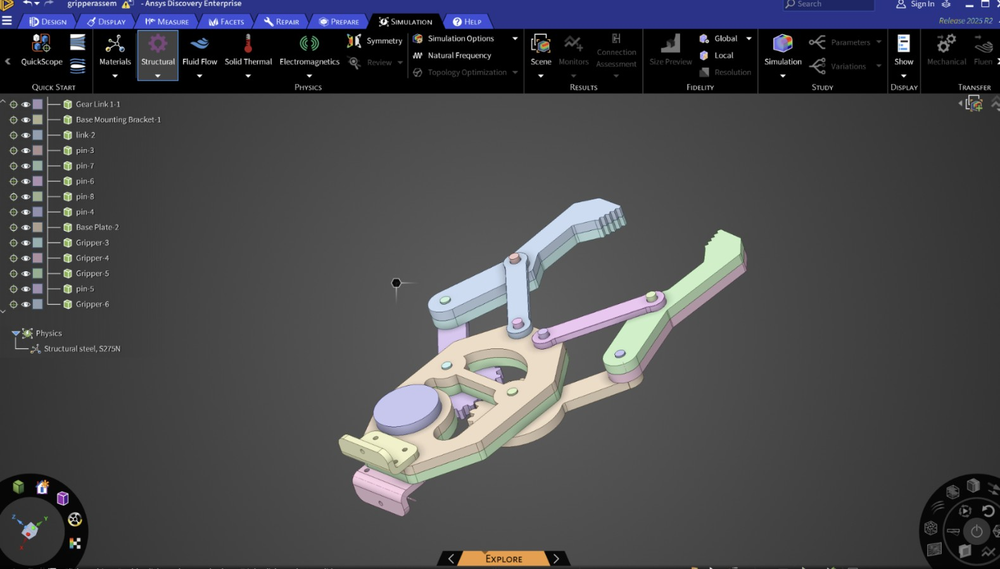
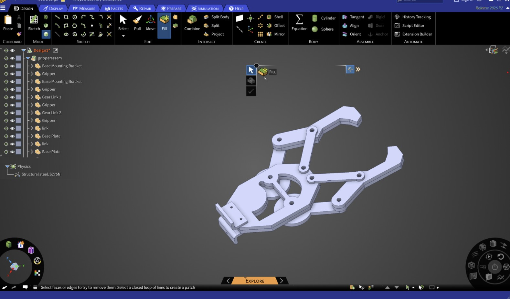
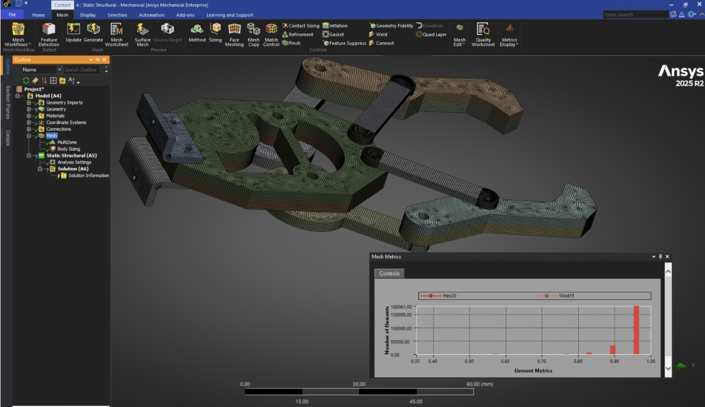
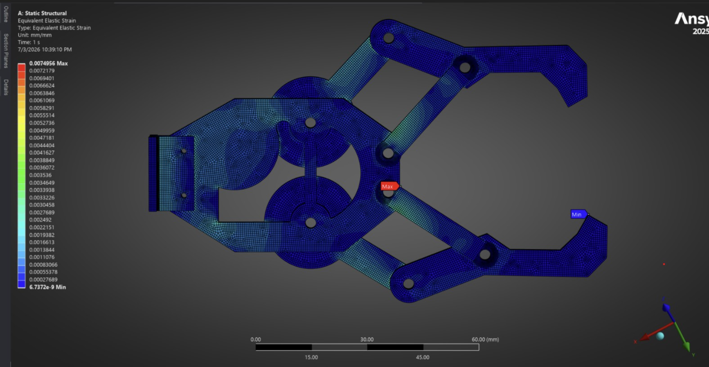
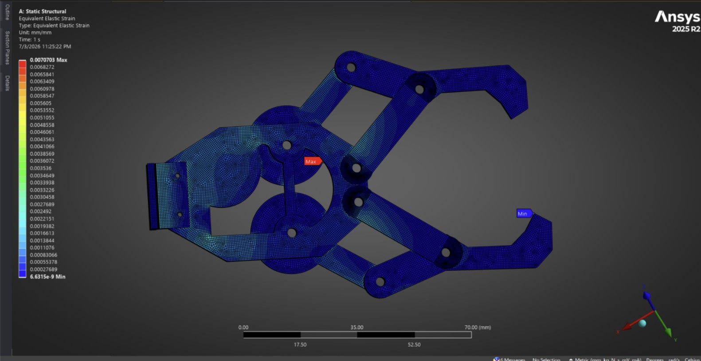

Key Takeaways
- FEA is most valuable when used alongside engineering fundamentals, not in place of them
- PLA behaves as a brittle material with negligible plastic deformation, so linear elastic modeling is the physically appropriate choice
- Hand calculations and FEA should agree. If they don't, something is wrong with the model
- Beam theory identified the critical load path before I ever opened the FEA software
- Thickness matters more than width for bending stiffness (cubic vs linear dependence)
Robotic arm executing precision movements with real-time inverse kinematics, simulated in Webots and mirrored on physical hardware.
Overview
This project is a fully realized 4-DOF robotic arm. I designed it from the ground up in SolidWorks, 3D printed it for physical validation, and controlled it via Arduino with a real-time inverse kinematics solver. The design prioritizes modularity, precision, and Design for Manufacturability (DFM), making every component swappable and print-optimized.
The simulation pipeline couples Webots with ROS2, allowing me to test joint trajectories in the virtual environment before mirroring them on physical hardware. Structural analysis in ANSYS Static drove gripper redesigns, validated against classical beam theory before committing to a design change.
Technical Highlights
- Inverse kinematics solver for smooth, real-time joint articulation across all 4 DOF
- Real-time sensor integration via serial communication between Arduino and host PC
- Full FEA pipeline in ANSYS with mesh optimization, loading conditions, strain analysis
- Webots + ROS2 co-simulation synced with physical hardware for safe trajectory testing
- DFM-optimized linkages, all parts designed for FDM printing with minimal support material
Exploded View
Visual breakdown of the arm's mechanical components and servo placements. Designed for easy assembly, maintenance, and part replacement.
Discovery Phase
Understanding the Load Path
Even a small amount of deflection at the gripper fingertips can propagate into a much larger positioning error by the time it reaches the object being manipulated. If the robot is holding a long component, a fraction of a millimeter of movement at the gripper can translate into several millimeters of error at the far end. Minimizing structural compliance is therefore, extremely important!
To understand how the mechanism behaved under load, I built a finite element model of the complete gripper assembly in ANSYS Discovery. The goal was to identify where strain concentrated, validate the simulation with classical mechanics, and use those results to make targeted design improvements.
Material Definition
Creating a Custom PLA Material Model
Why Linear Elastic?
A lot of people assume that more complex material models are automatically better. They're not. The right model depends on how the material actually behaves.
FDM-printed PLA is essentially a brittle material. Looking at published tensile test data for solid PLA specimens, the material fails at around 2.9% strain and 45 MPa with essentially no appreciable plastic plateau. There's no yield point followed by strain hardening. It just breaks.
If I had forced this data into ANSYS's Multilinear Isotropic Hardening (MISO) model, I would have been telling the software that the material can continue accumulating plastic strain before failure, even though the actual test data doesn't show that behavior.
Since my analysis is focused on stiffness and deflection (not failure prediction), a linear elastic model with the experimentally measured modulus is the most defensible choice.
Based on published tensile testing data for solid FDM PLA specimens, I created a custom material definition in ANSYS with the following properties:
| Property | Value | Source |
|---|---|---|
| Young's Modulus | 2.13 GPa | Experimental tensile test (solid specimens) |
| Poisson's Ratio | 0.36 | Literature value for PLA |
| Density | 1240 kg/m³ | Manufacturer datasheet |
| Tensile Strength | ~45 MPa | Experimental (for reference, not used in linear model) |
| Material Model | Linear Elastic, Isotropic | Brittle failure behavior |
The key insight here: PLA doesn't yield and strain-harden like steel or aluminum. It behaves elastically until it fractures.
Mechanical Design
Importing and Simplifying the CAD Model
I started by importing the complete CAD assembly into ANSYS Discovery. The original model contained many manufacturing details like gear teeth, fillets, chamfers, and rounded edges that dramatically increase mesh complexity without significantly affecting the global structural response of the mechanism.

Original CAD assembly imported into ANSYS Discovery

Simplified geometry with manufacturing details removed, load-bearing features preserved
By removing cosmetic features while preserving all load-bearing geometry, the simplified model meshed more reliably and solved significantly faster without sacrificing structural accuracy.
Building a High-Quality Mesh
Rather than relying on the default mesh, I optimized it to improve both convergence and solution accuracy. Most components were assigned MultiZone meshing to maximize the number of hexahedral elements. Body sizing controls and part decomposition were applied where necessary to maintain high-quality mapped meshes throughout the assembly.
The target was to keep the majority of elements above 80% element quality, producing a mesh dominated by structured hexahedral cells rather than lower-quality tetrahedral elements.

Final mesh with MultiZone hexahedral-dominant mesh with over 80% element quality across the assembly
Defining the Loading Conditions
To represent the gripper's mounting on the robotic arm, I fixed the mounting interface at the wrist attachment point. Two remote loads were then applied directly to the gripping surfaces:
- 2 N on the left finger
- 2 N on the right finger
This produced a total gripping load of 4 N, representing approximately a 400 g payload, the baseline for evaluating mechanism stiffness.
Identifying the Weak Link
After running the initial simulation, I examined the equivalent strain distribution throughout the assembly. Instead of the highest strain occurring at the fingertips as expected, it was highly concentrated within one of the shorter linkage members responsible for transmitting motion through the mechanism.

Initial equivalent strain distribution with peak strain unexpectedly concentrated in a short motion-transmission linkage, not the fingertips
This immediately told me something important: improving the stiffness of the fingers themselves would have little impact if this linkage continued acting as the primary source of compliance.
Using Beam Theory to Guide the Design
Rather than randomly increasing dimensions, I isolated the critical linkage and treated it as a cantilever beam. From elementary beam theory, the second moment of area depends linearly on width but cubically on thickness:
This means increasing thickness is far more effective at reducing bending than increasing width. However, real design constraints applied: the linkage rotates about cylindrical pins, which limited how much additional thickness could be added. Width had considerably more available space.
With those constraints in mind, I redesigned only the linkage cross-section:
| Dimension | Original | Optimized |
|---|---|---|
| Length | 37 mm | 37 mm |
| Width | 6.0 mm | 9.3 mm |
| Thickness | 2.0 mm | 3.0 mm |
Thickness increased by 50%, the most effective lever given the cubic dependence, while width was also increased to take advantage of the available geometric clearance and further boost stiffness without affecting mechanism functionality.
Validating the Design with Hand Calculations
Before trusting a second FEA result, I verified the optimized linkage analytically by treating it as a cantilever beam under a 2 N end load:
- Length = 37 mm
- Width = 9.3 mm
- Thickness = 3.0 mm
- E = 2.13 GPa (from custom material)
This provided an independent analytical estimate before running the updated simulation, giving a predicted peak surface strain of ε ≈ 0.0025.
Final Simulation Results
After updating the linkage geometry, I reran the full assembly simulation using identical material properties, mesh strategy, loading conditions, and boundary conditions as the initial run.

Final equivalent strain distribution with concentration in the critical linkage significantly reduced; load path now distributes more evenly through the assembly
The strain concentration within the critical linkage was significantly reduced, and the load path became much more evenly distributed throughout the mechanism, exactly what beam theory predicted.
Engineering Takeaway
FEA is most valuable when used alongside engineering fundamentals. I used simulation to identify the critical load path, applied beam theory to understand why that region was failing, designed around real constraints, and then validated the optimized design using both analytical calculation and finite element analysis. Simulation should be used as a decision-making tool grounded in first-principles mechanics.